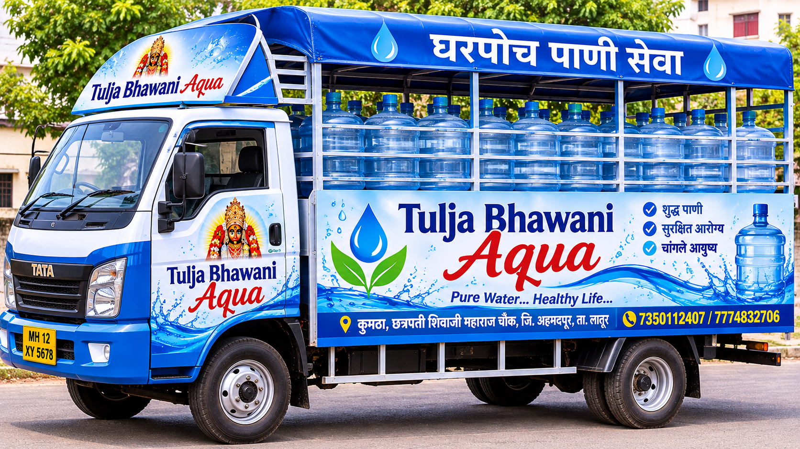

Tulja Bhawani Aqua is a trusted RO drinking water brand in kumtha, Maharashtra. Owned and operated by Mr. Raju nawade, located at MIDC Road, chatrapati shivaji maharaj chouk, kumtha(bk) - 413514.
We specialize in purified drinking water with advanced 7-stage RO purification, serving over 500+ daily customers including households, offices, marriage functions and hotels. Our best-selling products are Tulja Bhawani Aqua 20L Jar, 1L Box and 500ml Box. We ensure on-time delivery, affordable pricing and 100% purity.